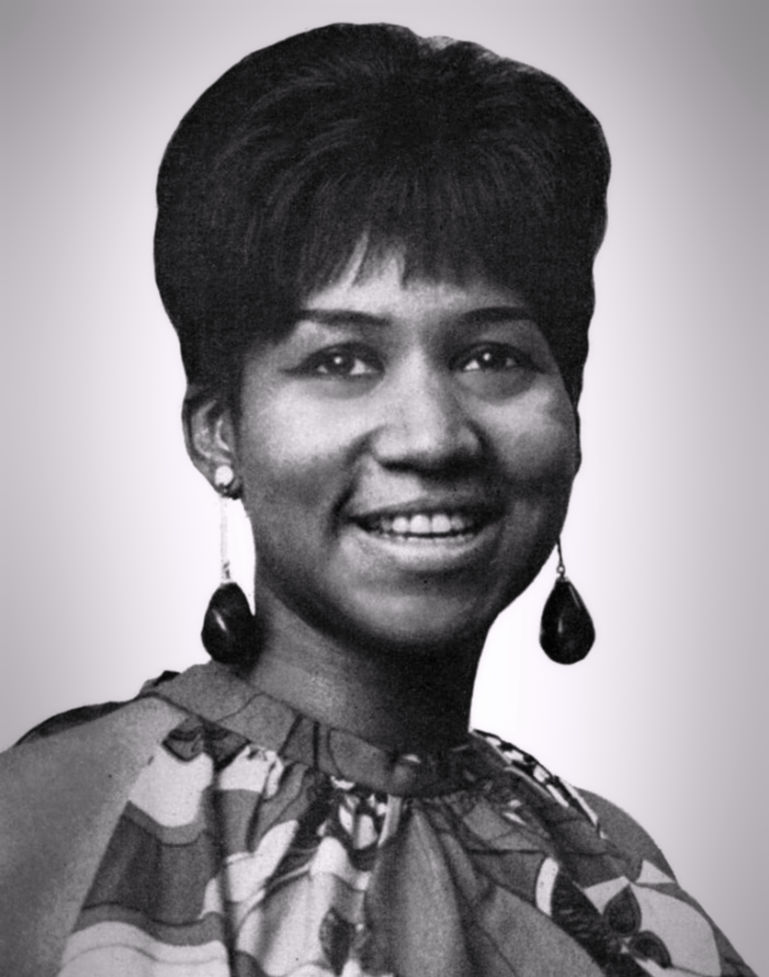

1967 music crowned Lulu's To Sir With Love as the year's biggest single.
It spent five weeks at number one on the Billboard Hot 100, the longest run of 1967.
Nineteen different songs reached the top that year, and the Monkees held it for ten weeks.
Listen to 1967 Music
25 of 1967's biggest hits are playable below, from Billboard's year-end top 100 for 1967.
Press play on any row, or use Play All to run the whole list.
| # | Title | Artist | Chart Peak | Genre |
|---|---|---|---|---|
| To Sir With Love | Lulu | No. 1, 5 wks | British Invasion | |
| The Letter | The Box Tops | No. 1, 4 wks | Motown, Soul & R&B | |
| Ode to Billie Joe | Bobbie Gentry | No. 1, 4 wks | Southern gothic ballad | |
| Windy | The Association | No. 1, 4 wks | Pop & Brill Building | |
| I'm a Believer | The Monkees | No. 1, 7 wks | Pop & Brill Building | |
| Light My Fire | The Doors | No. 1, 3 wks | Psychedelic Rock | |
| Somethin' Stupid | Frank & Nancy Sinatra | No. 1, 4 wks | Jazz & Easy Listening | |
| Happy Together | The Turtles | No. 1, 3 wks | Pop & Brill Building | |
| Groovin' | The Young Rascals | No. 1, 4 wks | Pop & Brill Building | |
| Can't Take My Eyes Off You | Frankie Valli | No. 2 | Pop & Brill Building | |
| Little Bit O' Soul | The Music Explosion | No. 2 | Garage & Surf Rock | |
| I Think We're Alone Now | Tommy James and the Shondells | No. 4 | Pop & Brill Building | |
| Respect | Aretha Franklin | No. 1, 2 wks | Motown, Soul & R&B | |
| I Was Made to Love Her | Stevie Wonder | No. 2 | Motown, Soul & R&B | |
| Come Back When You Grow Up | Bobby Vee | No. 3 | Pop & Brill Building | |
| Kind of a Drag | The Buckinghams | No. 1, 2 wks | Pop & Brill Building | |
| Sweet Soul Music | Arthur Conley | No. 2 | Motown, Soul & R&B | |
| Expressway to Your Heart | Soul Survivors | No. 4 | Motown, Soul & R&B | |
| Soul Man | Sam & Dave | No. 2 | Motown, Soul & R&B | |
| Never My Love | The Association | No. 2 | Pop & Brill Building | |
| Apples, Peaches, Pumpkin Pie | Jay & the Techniques | No. 6 | Motown, Soul & R&B | |
| Come On Down to My Boat | Every Mother's Son | No. 6 | Pop & Brill Building | |
| Incense and Peppermints | Strawberry Alarm Clock | No. 1, 1 wk | Psychedelic Rock | |
| Ruby Tuesday | The Rolling Stones | No. 1, 1 wk | British Invasion | |
| It Must Be Him | Vikki Carr | No. 3 | Jazz & Easy Listening |

Table of Contents
- Listen to 1967 Music
- 1967 Music's Billboard Hot 100 Number Ones
- Key Albums Released in 1967
- Notable Events in 1967
- Genre Shifts in 1967 Music
- Play 1967 on the Radio Dial
- FAQ
1967 Music's Billboard Hot 100 Number Ones
Nineteen different songs reached the top of the Billboard Hot 100 in 1967.
Five of them came from British acts: the Beatles, the Rolling Stones and Lulu.
The Monkees led the year with ten weeks at number one across two songs.
| Title | Artist | Chart | Peak Date | Weeks at #1 in 1967 |
|---|---|---|---|---|
| I'm a Believer | The Monkees | Billboard Hot 100 | Dec 31, 1966 | 6 (7 in all) |
| Kind of a Drag | The Buckinghams | Billboard Hot 100 | Feb 18, 1967 | 2 |
| Ruby Tuesday | The Rolling Stones | Billboard Hot 100 | Mar 4, 1967 | 1 |
| Love Is Here and Now You're Gone | The Supremes | Billboard Hot 100 | Mar 11, 1967 | 1 |
| Penny Lane | The Beatles | Billboard Hot 100 | Mar 18, 1967 | 1 |
| Happy Together | The Turtles | Billboard Hot 100 | Mar 25, 1967 | 3 |
| Somethin' Stupid | Nancy Sinatra and Frank Sinatra | Billboard Hot 100 | Apr 15, 1967 | 4 |
| The Happening | The Supremes | Billboard Hot 100 | May 13, 1967 | 1 |
| Groovin' | The Young Rascals | Billboard Hot 100 | May 20, 1967 | 4 |
| Respect | Aretha Franklin | Billboard Hot 100 | Jun 3, 1967 | 2 |
| Windy | The Association | Billboard Hot 100 | Jul 1, 1967 | 4 |
| Light My Fire | The Doors | Billboard Hot 100 | Jul 29, 1967 | 3 |
| All You Need Is Love | The Beatles | Billboard Hot 100 | Aug 19, 1967 | 1 |
| Ode to Billie Joe | Bobbie Gentry | Billboard Hot 100 | Aug 26, 1967 | 4 |
| The Letter | The Box Tops | Billboard Hot 100 | Sep 23, 1967 | 4 |
| To Sir With Love | Lulu | Billboard Hot 100 | Oct 21, 1967 | 5 |
| Incense and Peppermints | Strawberry Alarm Clock | Billboard Hot 100 | Nov 25, 1967 | 1 |
| Daydream Believer | The Monkees | Billboard Hot 100 | Dec 2, 1967 | 4 |
| Hello, Goodbye | The Beatles | Billboard Hot 100 | Dec 30, 1967 | 1 |
The Year-End Number One
Lulu's To Sir With Love reached number one on October 21 and stayed for five weeks.
It also tops Billboard's year-end Hot 100 for 1967.
The Box Tops' The Letter ranks second and Bobbie Gentry's Ode to Billie Joe third.
The Sinatras and Aretha Franklin
Frank and Nancy Sinatra's Somethin' Stupid took number one on April 15 and held it for four weeks.
Aretha Franklin's Respect followed on June 3 for two weeks, and it remains the only solo Hot 100 number one of her career.
How the Year Ended
Strawberry Alarm Clock's Incense and Peppermints took the top on November 25 for a single week.
The Monkees' Daydream Believer then ran four weeks from December 2.
The Beatles' Hello, Goodbye closed the chart year at number one on December 30.
Key Albums Released in 1967
Six albums stand out from 1967.
- Surrealistic Pillow, Jefferson Airplane (released February 1, 1967).
- I Never Loved a Man the Way I Love You, Aretha Franklin, Atlantic Records (released March 10, 1967).
- The Velvet Underground & Nico, Verve Records (released March 1967, sources differ on the exact day).
- Are You Experienced, The Jimi Hendrix Experience (released May 12, 1967, UK, and August 23, 1967, US).
- Sgt. Pepper's Lonely Hearts Club Band, The Beatles (released in the UK on May 26, 1967): 15 weeks at number one on Billboard's Top LPs chart.
- Forever Changes, Love (released November 1967).
Notable Events in 1967
- The Monterey International Pop Festival ran June 16 to 18, with the first major American shows by the Jimi Hendrix Experience and the Who.
- The Doors played the Ed Sullivan Show and the Who taped the Smothers Brothers Comedy Hour on the same night. Read more on September 17
- The Beach Boys' Smiley Smile came out on September 18. Read more on September 18
- The Box Tops' The Letter reached number one on September 23. Read more on September 23
- Bobbie Gentry's Ode to Billie Joe ended Sgt. Pepper's 15-week run atop the album chart on October 14. Read more on October 14
Genre Shifts in 1967 Music
1967 music belonged to pop first and everything else second.
By this site's genre tags, ten of the year-end top 25 were pop and Brill Building songs, including Windy, Happy Together and Groovin'.
Motown, soul and R&B supplied seven, from Respect to Soul Man.
The British Invasion sent To Sir With Love and Ruby Tuesday into the top 25.
Jazz and easy listening added Somethin' Stupid and Vikki Carr's It Must Be Him.
Garage rock appeared through the Music Explosion's Little Bit O' Soul.
Psychedelia Reaches Number One
The Doors' Light My Fire hit number one on July 29 and ranks sixth for the year.
Strawberry Alarm Clock's Incense and Peppermints reached the top in November.
Both pushed psychedelic rock from the underground onto AM radio.
Soul Fills the Top 25
Respect ranks 13th for the year, and Stevie Wonder's I Was Made to Love Her ranks 14th.
Arthur Conley's Sweet Soul Music and Sam and Dave's Soul Man both peaked at number two.
Play 1967 on the Radio Dial
The site's own Play 1967 on the Radio Dial tunes every station to songs from this year alone.
FAQ
What was the number one song of 1967?
To Sir With Love by Lulu is the number one song of 1967 on Billboard's year-end Hot 100.
It reached number one on October 21, 1967, and held the top spot for five weeks.
Which song spent the longest at number one in 1967?
To Sir With Love by Lulu spent five weeks at number one on the Billboard Hot 100, starting October 21.
That was the longest run of any 1967 chart-topper.
How many songs hit number one in 1967?
Nineteen different songs reached number one on the Billboard Hot 100 in 1967.
The year opened with the Monkees' I'm a Believer and closed with the Beatles' Hello, Goodbye.
Which act had the most weeks at number one in 1967?
The Monkees had the most weeks at number one in 1967, with ten.
I'm a Believer held the top for six weeks that year and Daydream Believer added four more.
What kind of music was popular in 1967?
1967 music ranged from pop and soul to psychedelia, easy listening and Southern gothic storytelling.
Aretha Franklin, the Doors, the Association, Frank and Nancy Sinatra and Bobbie Gentry all had year-end top 25 hits.
1967 turned into the year the Hot 100 went pop, soul and psychedelic all at once.
Compare it with the chart quirks of 1966 music.
Hear more of the decade in the best 60s songs list.
Explore the rest of the decade on the 1960smusic.net homepage.